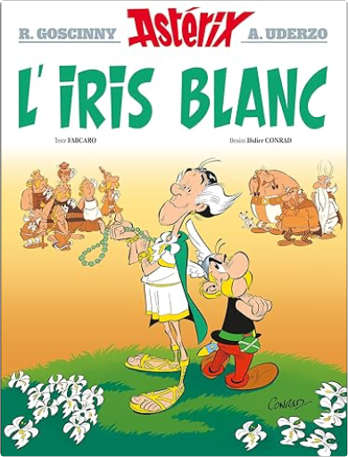
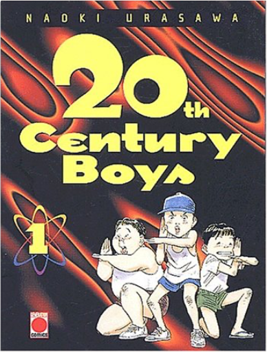
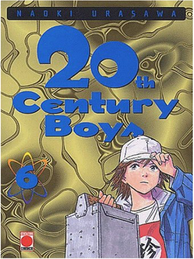

Julien
Collection Total:
2 053 Items
Last Updated:
May 23, 2024
Shelf:
Books
Movies
Albums
Videogames
Games
BD
BD Camille
Blu-ray
Business
Camille
Comics
Cooking
Lego
Manga
Pauline
Photography
Sport
Star Wars
T'choupi
Travel
TV Shows
Un livre dont vous êtes le héro
Vinyl
Walt Disney
73
74
75
76
77
astérix, tome 38 - la fille de vercingétorix
albert uderzo, rené goscinny
2864973421
astérix, tome 39 - et le griffon
albert uderzo, rené goscinny
2864973499

astérix, tome 40 - l'iris blanc
albert uderzo, rené goscinny
2014001332
San Francisco, Portrait of a City
Richie Unterberger
3836574853

20th century boys, tome 1
naoki urasawa
2845380798
20th century boys, tome 2
naoki urasawa
2845380992
20th century boys, tome 3
naoki urasawa
284538114X
20th century boys, tome 4
naoki urasawa
284538131X
20th century boys, tome 5
naoki urasawa
2845381743

20th century boys, tome 6
naoki urasawa
2845381999
20th century boys, tome 7
naoki urasawa
2845382103
20th century boys, tome 8
naoki urasawa
2845382294
20th century boys, tome 9
naoki urasawa
2845382502
20th century boys, tome 10
naoki urasawa
2845382715
73
74
75
76
77

 Made with Delicious Library
Made with Delicious Library